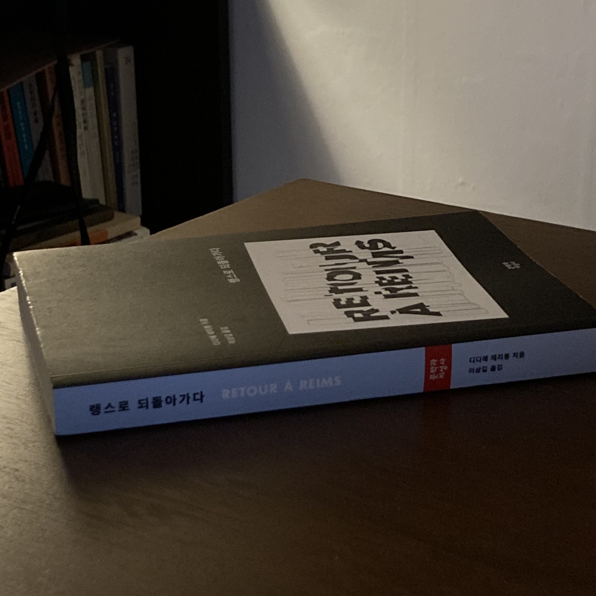

[독후감]서울로 되떠나오며 느낀 것들—《랭스로 되돌아가다》를 읽고
워킹홀리데이를 마치고 귀국한 게 8월 21일, 공항 근처에서 하루 묵고 집으로 향했으니 집에 도착한 건 22일 금요일. 주말 이틀을 보내고 다시 서울로 향했다. 부모님 집이 아닌 내가 살 집을 구하기 위해. 중간에 한 주간 일본 여행을 다녀왔고, 다시 귀국하자마자 당진과 서울을 오가며 공인중개사 사무소를 돌았다. 받은 명함이 마흔 개를 넘길 즈음 조건에 맞고 성에 차는 집을 발견, 그다음 주 월요일에 계약을 하기로. 이사는 계약하고 다시 이틀 뒤, 9월 18일이었다. 호주에서 돌아와 채 한 달도 되지 않아 다시 분가를 한 셈인데, 꽤나 서둘렀다고 볼 수 있다. 집을 구하는 중 스스로도 꽤 서두르고 있다고 생각했다. 그러는 중에 이 책을 읽었다. 랭스로 되돌아가는 저자와 달리 나는 다시 떠나는—되돌아가다와 대구를 맞춰 ‘되떠나는’이라고 할 수 있을까—시기였으나 묘하게 포개어지는 부분이 많아 몰입해 읽었다. 작가에 나를 비추어 보며 글을 쓰다 보면 이번에 다시 떠나오는 과정에서 내가 느낀 감정을 좀 더 들여다볼 수 있을 것 같아 시간 내어 정리해 보고 싶었다. 서둘러 떠나려 했던 그 마음에 관해, 그리고 다시 서울로 진입하며 느낀 여러 복잡다단한 심경에 관해.
1.
많은 한국의 젊은 세대가 그렇듯 나도 어린 시절부터 상경을 꿈꿨다. 많은 이가 교육 즉 대학 진학을 이유로(혹은 구실로) 서울에 진입한다. 내가 고등학교를 졸업할 무렵은 집안 사정이 가장 좋지 않았던 때, 나는 지방 국립대 다섯 곳에 원서를 넣었다. 주로 사립인 서울권 대학은 성적으로나 형편으로나 가기 어려울 것이라 생각했기에. 하지만 시도조차 않고 단념한 데엔 후자의 이유가 더 컸겠지.
학업에서의 도태는 마치 스스로의 선택과 요구에 따라 이루어진 것인 양, 많은 경우 자발적인 도태의 과정을 거친다. 학업 기간의 연장은 다른 사람들, 그러니까 ‘형편이 되는’ 사람들을 위한 것인데, 이들이 ‘학교에 가고 싶어 하는’ 사람들과 결국 일치하는 것으로 드러난다. 가능성의 장champ des possibles—실현할 수 있는 가능성의 장은 고사하고, 단순히 구상할 수 있는 가능성의 장조차—은 계급 위치에 의해 엄격하게 제한된다. (…) 사회적 영역에서 매우 명백한 규칙을 구성하는 것에 접근할 수 없을 경우, 우리는 그것이 무엇이 됐든 배제되었다거나 박탈당했다고 느끼지 않는다.(54-55쪽)
단념은 이어졌다. 대학을 다닐 때 어렴풋이 대학원에 간다면? 하고 상상해 보았지만 구체적인 계획으로 이어지진 않았다. 졸업 후 군 복무까지 마친 시기에 친구 몇몇이 대학원에 재학 중이었는데 당시에도 그저 부럽다고만 생각했지 그렇지만 나는 이를 배제 혹은 박탈이라 여기진 않았다.
그런 내가 부모 곁을 떠나 서울에서 살게 된 건 군 복무를 마친 후다. 돌이켜보면 이것이 첫 분가는 아니었다. 대학 시절, 한 학기 만에 그치긴 했으나 자취를 시도한 적도 있고, 고등학생 땐 기숙사 생활을 하는 곳으로 진학해 얼마간의 분리를 실현하기도 했다. 내가 전역할 무렵 나의 부모는 아무런 연고가 없는 경상남도 함양에 거주하고 있었고, 나는 일자리를 찾아 상경했다. 돌이켜보면 늘 탈주를 꿈꾸긴 했다. 그러나 이번 떠나옴은 일곱 해 전 그때와 결이 달랐다. 부모님 집에 머무는 게 편하면서도 편치 않았기에.
저자가 자신의 부모에 관해 쓴 부분 가운데 멈칫한 부분을 옮긴다.
아버지가 사회적 위계상으로는 아닐지라도, 공장 내의 위계를 몇 계단 오르는 데 성공한 것은 한참 뒤의 일이었다. 아버지는 비숙련 노동자의 지위에서 시작해 숙련 노동자를 거쳐 마침내 조장의 지위에 올랐다. 그는 더 이상 노동자가 아니었다. 이제 노동자들을 지휘했다. 더 정확히 말하자면, 한 조를 이끌었다. 아버지는 이 새로운 지위에 순진한 자부심을 드러냈고, 거기서 한층 긍정적인 자아 이미지를 이끌어냈다. 당연하게도 나는 그런 모습이 우스꽝스러웠다…_60쪽
함양에 거주하던 때 나의 아버지는 작은 현장의 소장 일을 맡았다. 장비 기사로 일해 왔던 그에게 그것은 저자의 아버지와 비슷한 정도의 일이 아니었을까. 꽤나 고양된 어투로 자신의 역할을 강조하던 내 아버지를 보며 나 역시 조금은 저자와 같은 마음을 품지 않았던가.
부모님은 온갖 소비재를 열렬히 욕망했다. (…) 그들은 그때까지 거부된 온갖 것들, 그들 이전에 그들 부모 역시 거부되었던 온갖 것들을 갖추고 싶은 갈망으로 살아 움직였다. 그럴 수 있게 되자마자, 그들은 대출을 늘려가면서 그동안 꿈꿔왔던 것들을 샀다. 중고차, 다음엔 신차, 텔레비전, 카탈로그로 주문하는 가구들.(…) 나는 그들이 줄기차게 물질적 안락만을 추구하는 것을 보며—심지어 “우리도 그걸 갖지 말라는 법은 없지” 하는 시기심으로—개탄했다. _97-98쪽
언젠가부터 쿠팡을 통해 쉽게 물건을 구매하는 부모를 보며, 여전히 풍족하지는 않은 형편임에도 쉽게 휴대폰을 바꾼다거나 하는 것을 보며 때론 답답해했다. 그런데 고작 이 정도가 내 불편함의 원인이었을까.
2.
예술에 대한 취향은 학습되는 것이다. 나는 배워서 얻었다. 그것은 내가 다른 세계, 다른 사회 계급 안으로 들어가기 위해, 그리고 내 출신 계급으로부터 거리를 두기 위해 수행해야 했던, 나 자신에 대한 거의 완전한 재교육의 일부였다. _119쪽
내가 떠나온 기간은 고작 십 년도 되지 않았지만 그 간극이 꽤나 크다고 느낀다. 그 이유를 페미니즘 학습에서 찾는다. 내가 페미니즘을 접한 건 2017년 즈음이고, 그 이후로 나는 점차 소수자에 관한 관심을 넓혀 왔다. 거창한 건 아니다. 그저 그 분야 책을 줄곧 읽은 정도. 그리고 내가 속했던 업계가 소수자성에 좀 더 민감했기에, 나는 저자가 예술에 대한 취향을 학습했듯 소위 ‘교양’을 학습했다.
따라서 이전의 나와 지금의 나 사이에도 꽤 큰 간극이 있을 터인데 하물며 앞 세대인 부모와는. 다행이라고 해야 할지, 저자의 가족과 달리 나의 부모는 극우 세력에 표를 던지지 않...지만 꽤나 열성적으로 특정 당을 지지하는데…. 저자의 어머니가 인종주의적 발언을 내뱉는 것을 저자가 참지 못하는 것과, 나의 부모가 권력형 성범죄를 두고 피해자 탓을 하던 때(이번에 머물 때 있던 일은 아니다) 내가 표정을 관리하지 못하는 순간은 얼마나 같고 또 얼마나 다를까. 이 두 경험을 나란히 두는 게 조금 억지일지도 모르지만, 저자와 내가 각 부모에게서 느낀 감정은 (정치적) 올바름에 관한 감도의 차이였다는 점에서 비슷하지 않을까. 그렇다면 저자와 내가 소위 ‘탈주’를 감행하지 않았다면 지금의 기준(예민함)을 학습할 수 있었을까. 하지만 저자가 고향에 남아 있던 “만약 내가 형제들과 같은 경로를 갔더라면, 나도 그들처럼 되었을까? 그러니까 나도 국민전선에 투표했을까?”라고 자문하는 부분을 보면서 나 역시 나를 돌아보게 되는 것이다. 특정 정치 세력을 지지하는 게 옳으니 그르니 따지려는 건 아니다. 그런 경향—저자의 경우 국민전선에, 나의 경우 현 집권 여당에 투표하는—이 두드러지는 지역에서 지금처럼 비판적 견해를 갖기 어렵지 않았을까 하는 정도의 염려다(물론 ‘서울’에서만 비판적 사고 및 활동이 가능한 건 아니다).
저자는 이어 말하는 법 또한 다시 배워야 했다고 서술하며 “옳지 않은 표현이나 지역적 관용어구 떨쳐내기, 북동부의 억양과 서민적 억양 교정, 정교한 어휘 구사, 적절한 문법적 배열 구축… 다시 말해 내 언어와 화술의 끝없는 통제”라고 표현한다. 어쩌면 이는 지방 사람들이 상경하여 사투리를 교정하는 과정과 닮지 않았는가. 사족을 덧붙이자면 남성보다는 여성이, 영남보다는 호남 사람이 사투리를 훨씬 빨리 고친다고 한다.
갑자기 웬 전라도 사투리 타령인가. 이번에 집을 구하는 과정 중 있던 일이다. 살펴볼 집을 향해 공인중개사와 걷던 중 그는 입이 마르도록 집주인을 칭찬했다. 좋은 분이다, 건물 관리도 잘 되어 있다, 성격도 좋고 돈도 많다. 이어서 나를 멈춰 세우는 한마디. “다 좋은데, 그런데 집주인이 전라도는 안 된대요.” 악의라고는 전혀 없는, 웃는 얼굴로 그 말을 건넸다. 그는 내가 호남에서 초,중학교와 대학교를 졸업한 사실을 알지 못했겠지. “이는 이성애자가 자기와 대화하는 상대가, 자신이 조롱하고 비방하는 낙인찍힌 종에 속할 수도 있다는 상상은 해보지도 않고 동성애자에 관해 말하는 것과 유사하다.” 나는 ‘웃으며’ 그 지역에서 대학을 나왔다고 대꾸했고 그는 사과 대신 “어머, 그러면 전라도분 아닌 걸로 해요”라며 눙쳤다. 웃지 말았어야 했는데, 내가 이 장면을 두고두고 곱씹은 건 물론이다(그러니 여기에도 쓰고 있지).
3.
그렇게 서둘러 떠나오려고 했지만 현실은 녹록지 않았다. 내가 지불할 수 있는 보증금과 월세로 구할 수 있는 집은 한정적이고, 개중 나은 곳을 찾기 위해 부동산을 전전했다. 서울에서 집을 구한 것도 이번이 네 번째인데, 유독 힘들었다. 도시 전체가 나를 밀어내는 느낌. 비서울인이, 그것도 번듯한 직장이 없는 상태로 서울에 진입하려는 순간 마주하는 ‘정지!’ 사인.
계급은 사람들이 다른 계급이나 신분의 경계에 다가갈 때 자신을 주변적인 존재로 느끼게 하면서 작동한다. 사회적 표식은 고속도로의 표지판처럼 언제나 사람들에게 말한다. 멈춤! 경로 이탈(당신은 잘못된 길로 들어섰습니다). 사회적 삶은 그러한 표식들로 가득 차 있다.—바바라 로젠블럼 _299쪽, 옮긴이 해제 중
집을 한창 구하던 때 우연히 당진의 부동산 가격을 보았다. 자연히 서울과 비교를 할 수밖에 없었고(내가 지불하려는 금액으로 그곳에서는 아파트에 살 수 있었다! 내가 본 서울의 다가구 전세가는 그곳의 아파트 매매가보다 높았고!). 그러나 내가 달리 갈 곳이 있나. 내 부모는 일자리(좀 더 정확히는 일거리)를 찾아 잦은 이주를 해 온 사람들이다. 내가 서울에서 거처를 두 번 옮길 때 그들 역시 두 번의 이사를 감행했다(함양에서 익산으로, 다시 당진으로). 함양 역시 내 연고지는 아니었고(내가 군대에 있는 2년 4개월 동안 내 부모는 광주에서 대구를 거쳐 함양으로 주소를 옮겼다), 광주로의 이사 역시 나의 대학 진학과 함께 이루어진 것이었고.
작년에 워킹홀리데이를 떠나는 마음 가운데엔 서울의 빠른 속도에 지친 것도 있었다. 돌아갈 본가가 연고 없는 지역인지라 차라리 해외에서 살아보는 경험이 낫겠다 싶었고. 이번에 돌아와서도 지역에서 내가 할 수 있는 걸 떠올렸을 때 잡히는 게 전혀 없었고, 결국 하루라도 빨리 서울에 거처를 구하고 구직이든 아르바이트든 하는 게 낫겠다는 결론에 이른다. 더불어 본가가 오래 살아온 지역이 아니라면 그 역시 나에게 타지, 즉 낯선 동네라는 의미다. 그렇게 나는 조급증에 걸린 것마냥 다시 그 속도에 빨려 들고 있다.
마치며
그래서, 이 장황한 글을 통해 나는 무엇을 이야기하고 싶은 걸까. 앞서 밝혔듯 서울에 ‘다시 상경하며’ 느꼈던 복잡 미묘한 감정을 붙잡아 두고 싶었다. 크게 두 갈래인 듯하다. 부모의 집에서 느낀 묘한 불편감과, 서울이라는 도시에 진입하는 비서울인의 답답함 정도. 우선 다급히 집을 구하고 빠르게 떠나오며 내가 느낀 감정은 무엇이었을까. 글쎄, 정확히는 모르겠다. 와이드먼이 이야기한 죄책감일까. 귀국한지 사흘도 채 안 되어 방을 알아보겠다고 서울로 향하는 나를 보며 나의 부모도 알았을 것이다. 집을 그리 편하게만은 여기지 않고 있다는 것을. 그리고 다시 그것을 감지한 내가 느끼는 감정.
나 역시 선택을 했고, 그와 마찬가지로 나 자신을 선택했다. 그러나 나는 와이드먼이 환기하는 그 죄책감을 간헐적으로 느꼈을 따름이다. 나는 자유의 감정에 도취되었다. 내 운명을 벗어났다는 기쁨, 그것은 후회의 자리를 거의 남기지 않았다. _129쪽
뭐 거창하게 죄책감까지 갈 것까진 아닌지도 모른다. 그저 이번 연휴에 본가에 가지 않겠다고 했을 때 아쉬움이 뚝뚝 묻어나는 부모의 목소리를 듣고선 애써 모른 체하는 정도의 마음인지도. 이 감정을 포함해 이사하며 느낀 것들을 두서없이 부려 둔다. 마침 읽은 이 책이 고개를 끄덕이게 하는 부분이 많아 독후감을 빙자해 써 본다. 가족에게 품는 가책이든, 일자리를 찾아 상경하는 비서울인 청년의 답답함이든, 고향 혹은 연고지가 없는 이의 쓸쓸함이든, 지금 이 시기 나의 복잡한 감정을.
